康宝莱（HBL）微信小程序
康宝莱，全球营养与体重管理专家。与安利一样，属直销产品，主打蛋白粉营养奶昔。在互联网电商的影响下，开始打造线上销售渠道，最终落点为微信小程序。
在视觉探索的过程中，为了更好地契合品牌形象，我们针对“专业 & 友好”两个不同方向做了 concept 尝试，并最终在客户选定的方案下进行了一系列基因化延伸。该项目由 EY 负责前期调研，ARK 负责小程序端的 UX 设计。
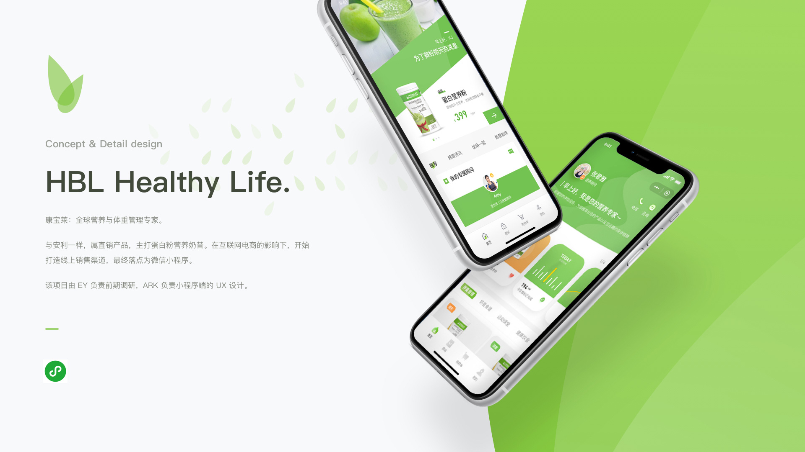
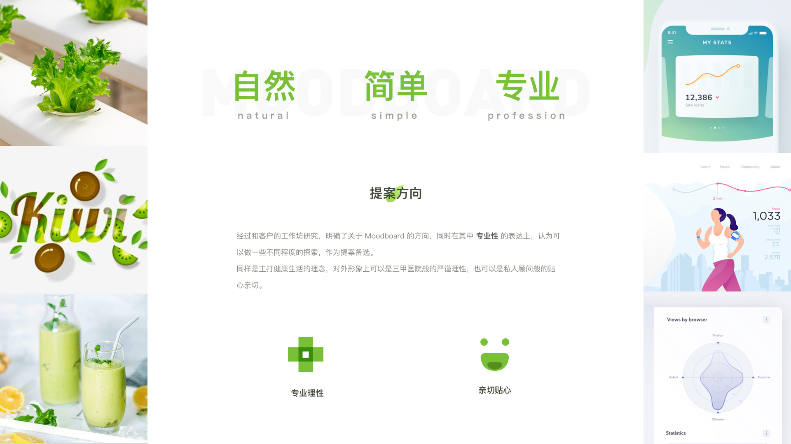
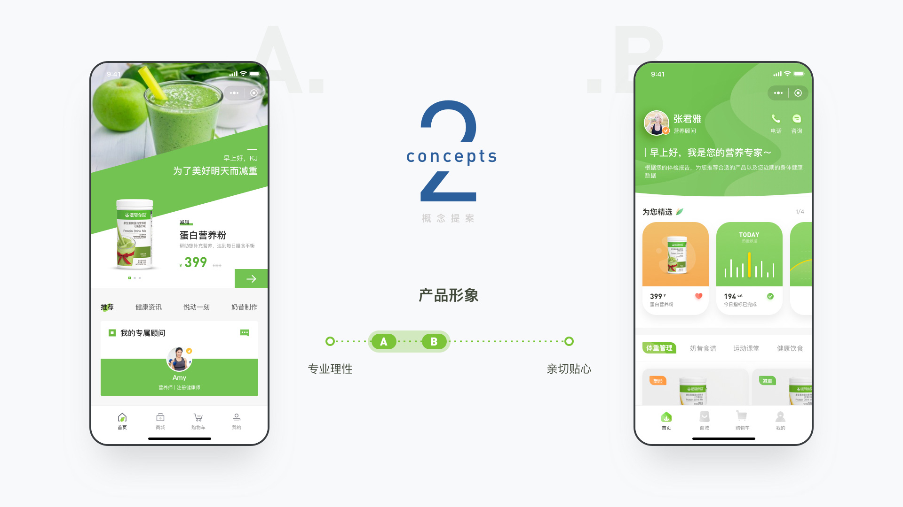
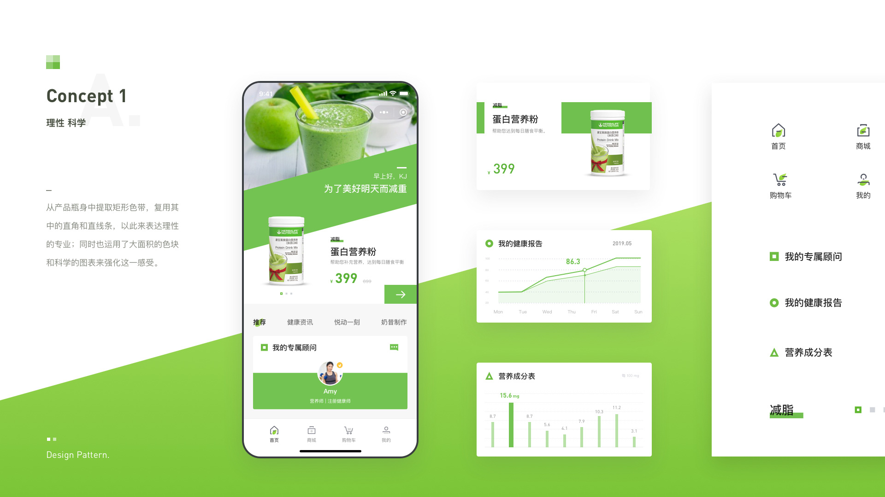
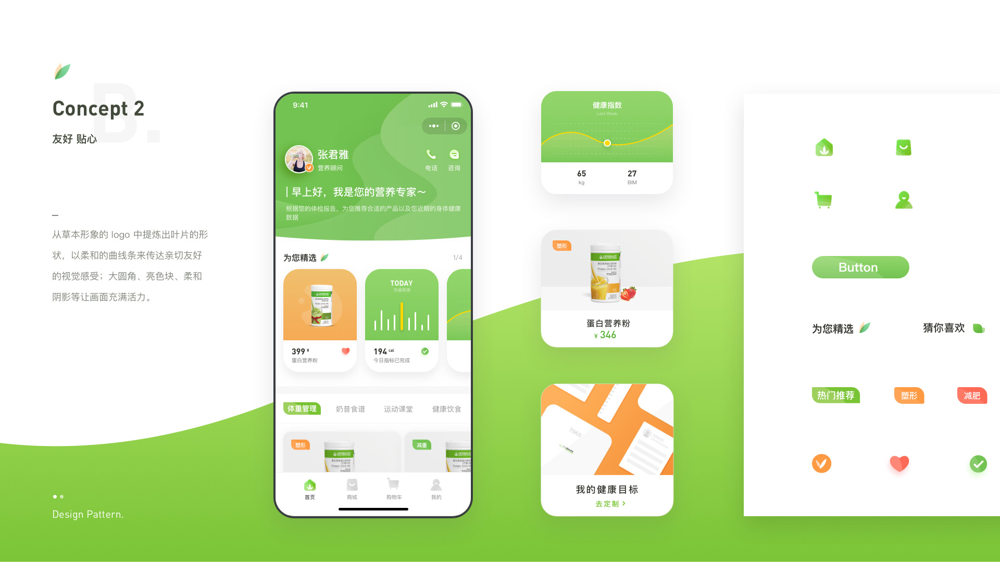
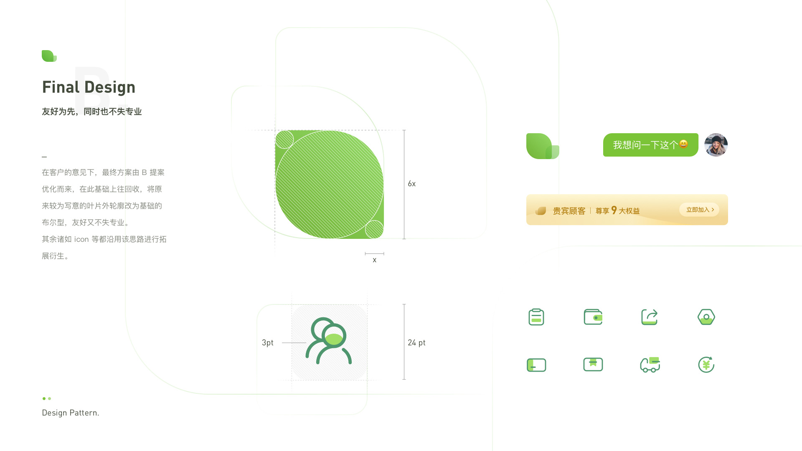
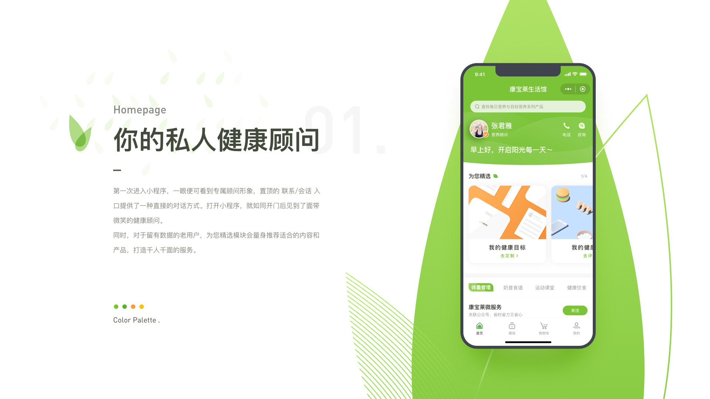
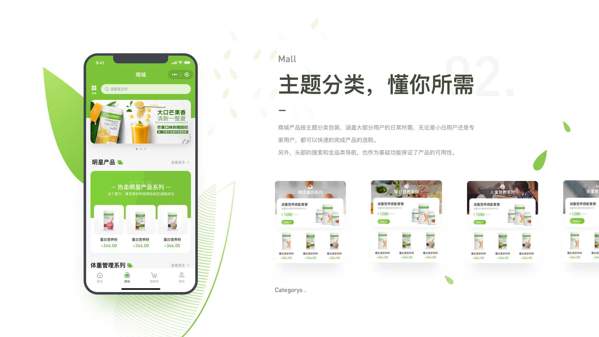
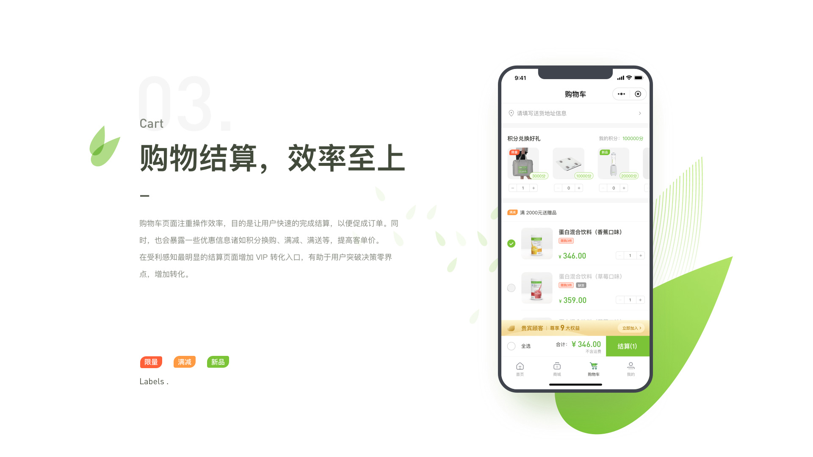
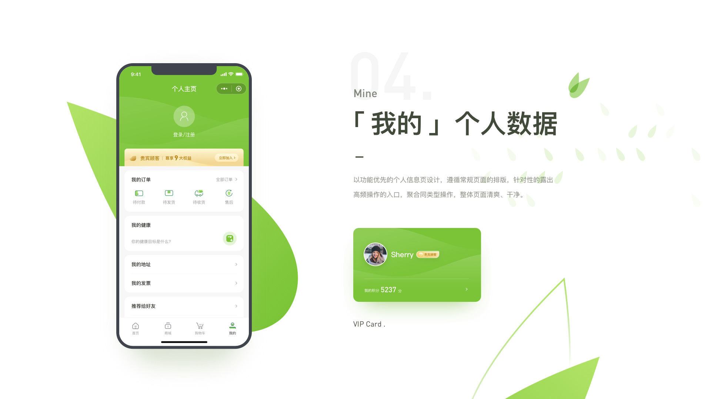
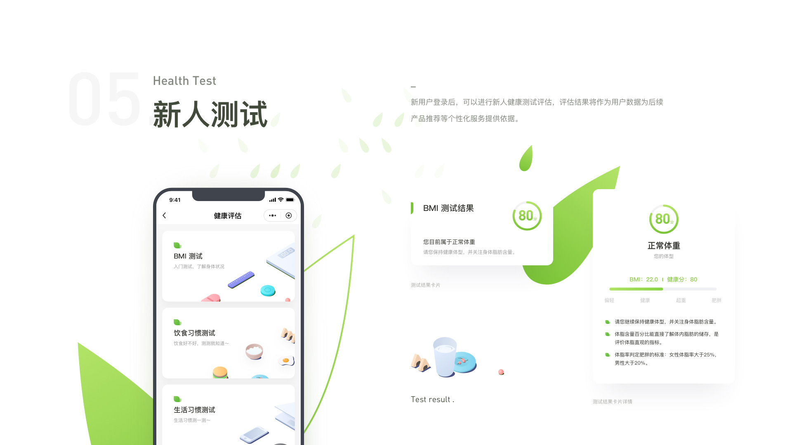
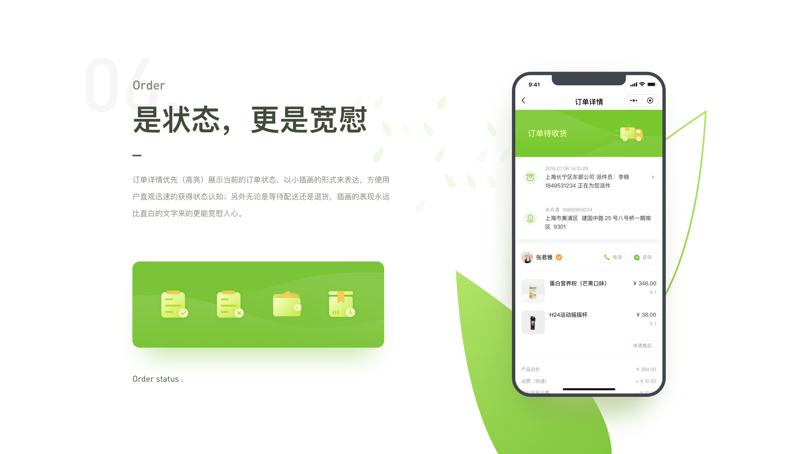
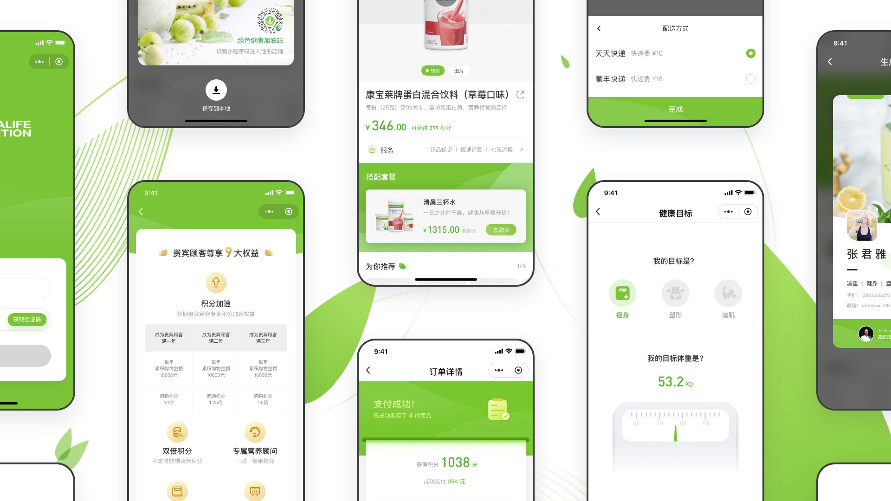